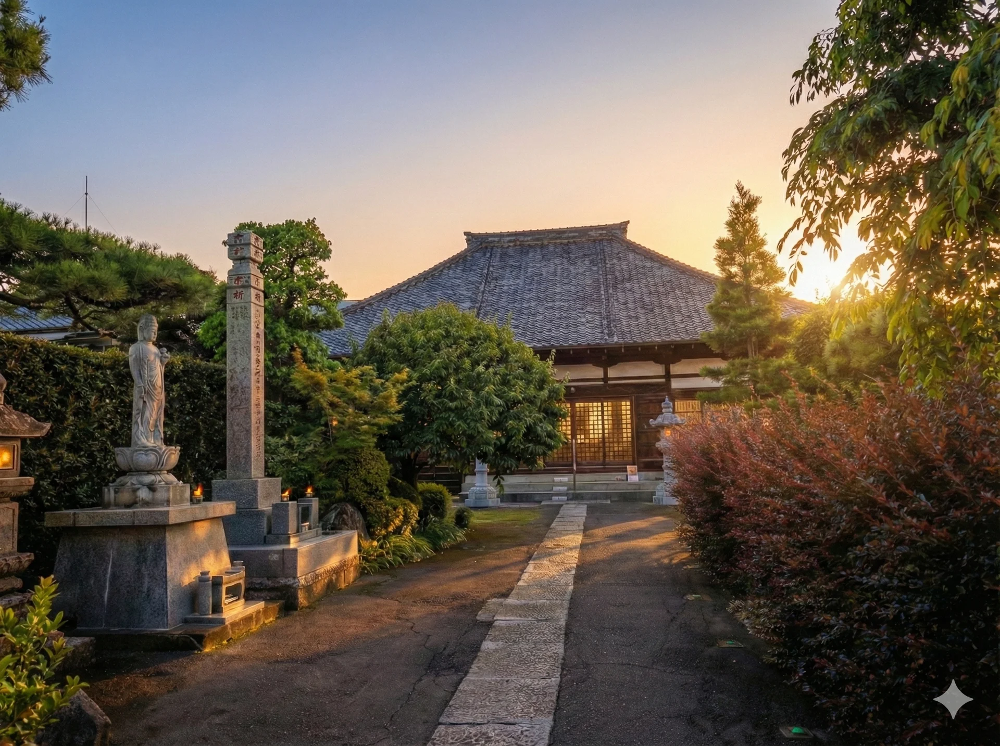
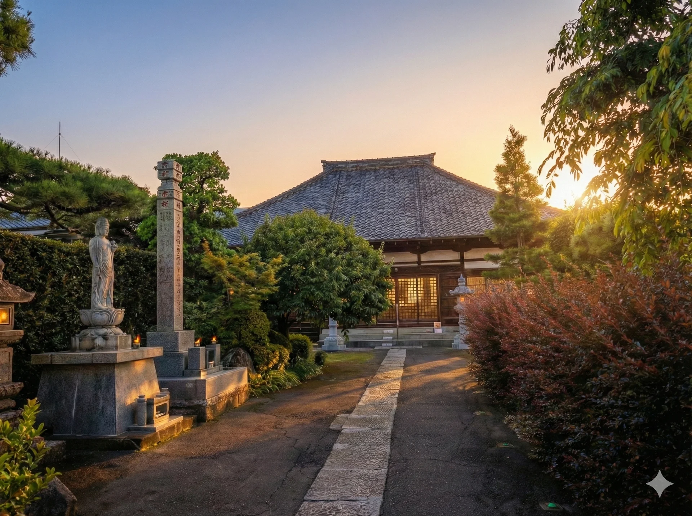

太子堂
太子山大聖院聖徳寺は、埼玉県久喜市下早見に位置しています（下早見336）。本尊として安置されているのは荘厳な阿弥陀如来坐像です。

真言宗智山派
八劒山 蓮花院

 



四季の彩りと、静謐な祈り。
ご先祖様と心を通わす、
大切なひとときを。
静寂の中に灯る、
一筋の安らぎ。
蓮花院は、
四季の移ろいと共に
皆様の祈りを
お預かりしております。

太子山大聖院聖徳寺は、埼玉県久喜市下早見に位置しています（下早見336）。本尊として安置されているのは荘厳な阿弥陀如来坐像です。
埼玉県久喜市下早見1783に位置する三入寮は、静かな佇まいの中に深い信仰心が息づく場所です。本尊として荘厳な阿弥陀如来坐像が安置されています。
埼玉県久喜市下早見85に位置する補陀落山観音寺密蔵院は、観音菩薩の浄土にちなんだ山号を持つ歴史ある寺院です。
四季折々の行事を通じて、心の安らぎをお届けいたします。
3月18日～24日
春分の日を中心に、先祖供養の法要を行います。多くの方々が参拝され、先祖の霊を供養します。
8月15日
ご先祖様やご縁ある方々のご供養を行います。大般若経の転読と施餓鬼法要を厳修します。
9月20日～26日
秋分の日を中心に、先祖供養の法要を行います。春と同様に、多くの方々が参拝されます。
12月31日
年の終わりに感謝し、新年の平安を祈願する静かな法要を行います。
法要、祈願、その他のご相談など、お気軽にお問い合わせください。

蓮花院二十世住職
白石純栄
当山は檀信徒の皆様だけでなく、訪れるすべての方々が心の安らぎを感じられる場所でありたいと願っております。清らかな境内と穏やかな雰囲気の中で、心が軽くなる空間づくりに日々努めています。
この間、当山総代をはじめ、近隣のご住職方、そして地域の皆様からいただいた温かいご支援に心より感謝申し上げます。皆様のお力添えにより、微力ながら蓮花院の住職としての務めを果たしてまいりました。
2006年4月、十九世加藤正照僧正の体調不良に伴い、法類本寺である川口安行の密蔵院より当山に赴任いたしました。2009年12月に住職を拝命し、以来15年余りが経ちました。
どなたも気軽に立ち寄れる開かれた寺院として、皆様の心の支えとなれるよう精進してまいります。お近くにお越しの際は、どうぞお気軽にお立ち寄りください。皆様のご来山を心よりお待ちしております。
四季折々の花や木々が楽しめる庭園や、歴史ある建造物など、蓮花院の見どころをご紹介します。

本尊の不動明王をお祀りする本堂は、日本古来の建築様式を継承する貴重な建造物です。

慈悲の象徴として多くの参拝者を迎えてきました。心の悩みを救ってくださる菩薩様です。

寺院の威厳を表す重要な建造物です。「八剱山蓮花院」の文字が刻まれた石碑が参拝者をお迎えします。
四季折々の花や木々が楽しめる庭園は、心を落ち着かせる瞑想の場としても親しまれています。
太子山大聖院聖徳寺は、埼玉県久喜市下早見に位置しています（下早見336）。本尊として安置されているのは荘厳な阿弥陀如来坐像です。
阿弥陀如来は、衆生を救済するという慈悲の心を表しています。また、脇侍として地蔵菩薩立像が祀られており、子供や旅人の守護神として多くの人々の信仰を集めていました。
地図を読み込み中...
四季折々の花々が楽しめる庭園や、歴史ある建造物など、蓮花院の見どころをご紹介します。
本尊不動明王を祀る本堂は、日本古来の建築様式を継承する貴重な建造物です。

慈悲の象徴として多くの参拝者を迎えてきました。心を救ってくださる菩薩様です。
荘厳な風格を持つ山門は、訪れる方々を静かに迎え入れます。

四季折々の自然が楽しめる庭園。春は桜、秋は紅葉が美しく彩ります。